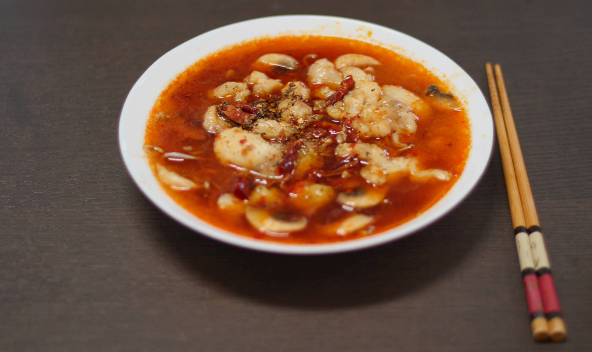

Sichuan Boiled Fish
An extremely spicy dish, yet rich in flavor. For the best results, try making the sichuan chili oil yourself (recipe is linked from the ingredients overview). As a serving suggestion we like to have a bowl of rich creamy ice cream on the side to allow us to enjoy even more of it when we fist make it (did I mention that it's very spicy?).
metadata
Created on 2019-09-01 Last updated on 2020-12-03
Adapted from 【田园时光美食】水煮鱼Fish filets in hot chili oil by 田园时光Garden Time homemade cuisine @ YouTube (2019-08-31)
Estimated time needed: At least 20 minutes. At most 48 minutes.
Ingredients
| 300 | g | White fish | Use filets if you want to keep things simple. The actual type of fish that seems to be more commonly used in China is Pangasius bocourti (found no other name in English). Can be substituted for other white fish that might be easier to get a hold of where you live, such as tilapia or wolffish. It's no problem to buy the fish frozen, actually you might find it easier to work with the fish when it's partially frozen. | |
| 150 | g | mushrooms | ||
| 100 | g | bean sprouts | ||
| 50 | g | hot bean paste | 50 g is approximately 1 tbsp. Often used in Chinese cooking. Can usually be found in jars, is red-ish in color, and can also be found with other names such as «hot bean paste» or «chili bean sauce». | |
| 30 | g | garlic | ||
| 10 | g | chicken buillion | Or use 1 cube if you have bouillon in cubes | |
| 8.5 | g | salt | 5.7g is about 1 tsp | |
| 7.5 | g | cornstarch | 7.5g is about 1 tbsp | |
| 7 | tbsp | sichuan chili oil | ||
| 5 | dl | water | ||
| 4.2 | g | sichuan pepper | ||
| 1.2 | g | white pepper | 2.3g is about 1 tsp | |
| 1 | g | dried chili |
Scaling
Timeline
Directions
⌛ Active time 5 minutes
- 300 g White fish | Use filets if you want to keep things simple. The actual type of fish that seems to be more commonly used in China is Pangasius bocourti (found no other name in English). Can be substituted for other white fish that might be easier to get a hold of where you live, such as tilapia or wolffish. It's no problem to buy the fish frozen, actually you might find it easier to work with the fish when it's partially frozen.
Slice the fish:
You want to slice the fish as thinly as possible. It's no problem if it's so thin that the slices are transparent. However, you should only go as thing as you are comfortable with, as you don't want the pieces to tear apart as you're cutting them either. To make it easier, try to cut diagonally. If you are familiar with it, the result should look like sashimi pieces.
⌛ Active time 2 minutes | Passive time 10 minutes
- 7.5 g cornstarch | 7.5g is about 1 tbsp
- 2.8 g salt | 5.7g is about 1 tsp
- 1.2 g white pepper | 2.3g is about 1 tsp
Coat fish slices:
In a bowl, coat the fish slices with som salt, pepper, and cornstarch. Make sure to mix it all together well, so that the fish is evenly covered. Set aside, and let it rest for at least 10 minutes while you proceed with the rest of the steps.
⌛ Active time 2 minutes
- 4.2 g sichuan pepper
Fry sichuan pepper:
In a dry pan, fry the sichuan peppers until the become crispy. Note that the heating step is important even if the pepper you have is dried, it will release more flavor.
⌛ Active time 1 minutes
Make sichuan pepper powder:
Pour them over in a mortar and crush them to a powder. (Be aware that if you don't have a mortar and pestle you could crush the pepper on a cutting board under the backside of a spoon. But seriously, get a mortar and pestle.)
⌛ Active time 5 minutes
- 4 tbsp sichuan chili oil
- 1 g dried chili
Make hot oil sauce:
In a saucepan, add sichuan chili oil, and a few of the dried chilies. Heat it up, and when the oil is boling, pour in the sichuan pepper powder you made previously. Stir it around, and after a few seconds (10 - 20 after you added the pepper powder), it should be done. Set it aside for later.
⌛ Active time 1 minutes | Passive time 5 minutes
- 5 dl water
- 10 g chicken buillion | Or use 1 cube if you have bouillon in cubes
Prepare chicken broth:
Prepare som chicken broth and set it aside for later.
⌛ Active time 5 minutes
- 30 g garlic
- 100 g bean sprouts
- 150 g mushrooms
Prepare the vegetables:
Chop the garlic and mushrooms, and was the bean sprouts. The garlic should be rougly chopped in large pieces.
⌛ Active time 5 minutes
- 5.7 g salt
- 2 tbsp sichuan chili oil
Stir fry vegetables:
Heat up a couple of tablespoons of sichuan chili oil in a wok pan, add the vegetables, a bit of salt, and stir fry it until you are satisfied that they are done. Place them in the serving bowl.
⌛ Active time 1 minutes | Passive time 3 minutes
- 50 g hot bean paste | 50 g is approximately 1 tbsp. Often used in Chinese cooking. Can usually be found in jars, is red-ish in color, and can also be found with other names such as «hot bean paste» or «chili bean sauce».
- 1 tbsp sichuan chili oil
Prepare the soup base:
Add sichuan chili oil to the wok pan, while the pan is still hot. Add the bean paste, and fry it for about 30 seconds. Then add the chicken broth, and bring it to a boil.
⌛ Active time 1 minutes | Passive time 1 minutes
Cook the fish:
Add the fish slices to the wok pan. Cook for about 1 minute. Then pour it over the vegetables in the bowl.
⌛ Active time 1 minutes
Pour hot oil sauce over fish and vegetables:
Pour it all (with the chilies and everything) over the bowl with the fish and vegetables and serve.